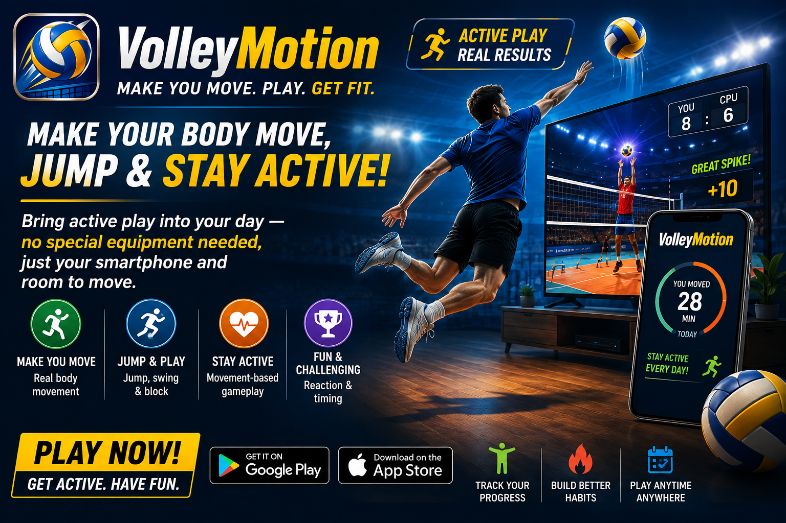

Move.
Jump.
Stay Active.
VolleyMotion brings active play into your day — no special equipment needed, just your smartphone and room to move. Use your phone camera, follow visual and voice cues, swing your arm to hit, jump for high balls and raise both hands to block.
It is designed for people searching for a volleyball game, interactive volleyball app, camera volleyball game, motion game, active mobile game, volleyball fitness game, movement game, reaction game or timing-based sports game.

An active volleyball game controlled by movement
VolleyMotion turns your phone into an interactive sports experience using camera-visible motion, reaction timing, arm swings, jumps and blocks.
📷 Camera Volleyball Game
Use the front camera so the game can respond to visible body and arm movement.
🏐 Spike & Hit
Make a fresh arm swing when the action calls for a volleyball hit or spike-style movement.
⬆️ Jump
React to higher plays with a jump, combining timing with active movement.
🙌 Block
Raise both hands during block cues to respond to action near the net.
🔊 Voice Coaching
Short coaching prompts help you prepare for the next action while keeping attention on the rally.
⚡ Reaction & Timing
Watch the ball, listen for cues and react at the right moment during each rally.
Relevant volleyball and active-game searches
VolleyMotion FAQ
What is VolleyMotion?
VolleyMotion is an interactive volleyball motion game that uses the phone camera and real movement during gameplay.
What movements does VolleyMotion use?
Gameplay includes arm swings for hits, jumps for higher actions and two-hand block movements, guided by visual and voice cues.
Is VolleyMotion a fitness app?
VolleyMotion is an active movement-based game. It encourages physical participation, but it is presented as a game rather than a medical or health-measurement product.
Can I play VolleyMotion on Android and iPhone?
Yes. VolleyMotion has store links for both Google Play and the Apple App Store.